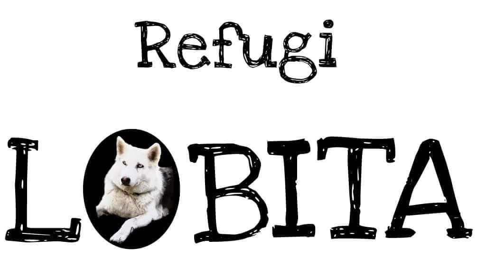

Projecte Refugi Lobita
Autors:
- Eduard Iglesies
- Iban Cervera
- Esther Pont
- Susana Garcia
Introducció
Projecte Refugi Lobita és un projecte per un refugi d'animals on es poden veure els diferentes animals que té el refugi, i els usuaris registrats poden realitzar donacions, apadrinar animals, o adoptarlos.
Funcionalitats
- Noticies: Al entrar al web, es mostraran les noticies destacades del Refugi.
- Adoptar animals: Els usuaris registrats, podran adoptar els animals que apareixen al web.
- Apadrinar animals: Els usuaris registrats, podran apadrinar a diferents animals que apareixen al web.
- Donacions: Els usuaris registrats podran realitzar donacions al refugi, per al manteniment dels animals.
Tecnologies
-
Frontend: Html
, CSS
, Javascript
-
Backend: Spring Boot
-
Database: MySQL
Arquitectura
Aquest projecte fa servir una arquitectura del tipus RESTful API (Respresentational State Transfer), un estil d'arquitectura àmpliament utilitzat per a sistemes distribuïts que interactuen a través de la web. Aquesta arquitectura es basa en l'us de recursos identificats mitjançant URLs i en la transferencia de representacions d'aquests recursos a través del protocol HTTP.
Les funcions bàsiques d'una API RESTful es basen en els mètodes estàndar d'HTTP, que permeten realitzar operacions sobre els recursos disponibles. Aquestes funciones inclouen:
- GET: Recuperar informació d'un recurs específic. Per exemple, obtenir la llista d'animals, o d'un animal en concret.
- POST: Crear un nou recurs. Per exemple, afegir un nou animal al sistema.
- PUT: Actualitzar un recurs existent. Per exemple, modificar els detalls d'un animal creat previament.
- DELETE: Eliminar un recurs especific. Per exemple, esborrar un animal del sistema.
- PATCH: Actualitzar parcialment un recurs, utilitzat per a canvis específics sense modificar tot el recurs.
En seguir els principis REST, aquesta arquitectura ofereix característiques clau com ara:
- Escalabilitat: Els clients i els servidors estan desacoblats, cosa que facilita el creixement del sistema.
- Simplicitat: L'ús d'estàndards com HTTP i JSON permet una integració i comprensió senzilles.
- Portabilitat: Els recursos són fàcilment accessibles des de diferents plataformes i dispositius.
La estructura del projecte es la següent:
- Frontend: https://github.com/susangn50/ProjecteRefugiLobita Aqui trobarem el html,css i javascript.
- Backend: https://github.com/susangn50/ProjecteRefugiLobitaJavaSpring Aquí trobarem l'aplicació Spring Boot.